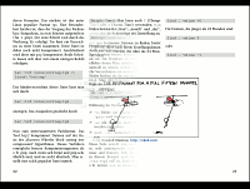
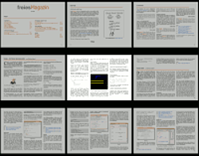
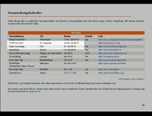
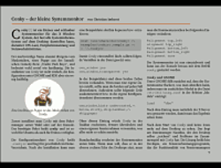

impress!ve
Dieser Artikel wurde für die folgenden Ubuntu-Versionen getestet:
Ubuntu 16.04 Xenial Xerus
Ubuntu 14.04 Trusty Tahr
Zum Verständnis dieses Artikels sind folgende Seiten hilfreich:
 impress!ve
impress!ve  (ehem. KeyJNote) ist ein Programm, das zum Durchführen von Präsentationen im PDF-Format ausgelegt ist. Die PDF-Dateien können aus jedem beliebigen Programm (LaTeX-Beamer, OpenOffice.org Impress, Inkscape, GIMP) exportiert werden können. impress!ve übernimmt nur noch das Präsentieren - das Programm wird demnach bei der Endpräsentation in installierter Form benötigt, ein Speichern in eine "Präsentationsdatei" ist nicht möglich. Zur Verfügung stehen eine Reihe zeitgerechter und einfacher Überblendungseffekt sowie die Möglichkeit während der Präsentation Textbereiche hervorzuheben.
(ehem. KeyJNote) ist ein Programm, das zum Durchführen von Präsentationen im PDF-Format ausgelegt ist. Die PDF-Dateien können aus jedem beliebigen Programm (LaTeX-Beamer, OpenOffice.org Impress, Inkscape, GIMP) exportiert werden können. impress!ve übernimmt nur noch das Präsentieren - das Programm wird demnach bei der Endpräsentation in installierter Form benötigt, ein Speichern in eine "Präsentationsdatei" ist nicht möglich. Zur Verfügung stehen eine Reihe zeitgerechter und einfacher Überblendungseffekt sowie die Möglichkeit während der Präsentation Textbereiche hervorzuheben.
Man hat somit den Vorteil der freien Wahl über das Programm, mit dem man die Präsentation erstellen will und gleichzeitig liegt diese in einem freien und jedermann zugänglichen Format vor. impress!ve wird auch denjenigen gefallen, die sich an den teils unprofessionellen Impress/Powerpoint-Präsentationen satt gesehen haben. Ferner kann impress!ve auch auf JPG-Basis arbeiten und bietet somit eine Möglichkeit, ein Fotoalbum ansprechend zu präsentieren.
Installation¶
Folgendes Paket muss installiert [1] werden:
impressive
 mit apturl
mit apturl
Paketliste zum Kopieren:
sudo apt-get install impressive
sudo aptitude install impressive
Bedienung¶
impress!ve wird in einem Terminal [2] mit den gewünschten Optionen gestartet, die weitere Benutzung erfolgt Terminal-unabhängig auf der sich öffnenden Programmoberfläche. Mit folgendem Befehl startet impress!ve eine beliebige PDF-Datei und führt sie – wie von OpenOffice Impress bzw. Microsoft Powerpoint gewohnt – als Vollbildpräsentation vor. Ist die Präsentation erstmal geladen, erfolgt die weitere Steuerung über Maus- und Tastenbefehle.
impressive /pfad/zur/datei/präsentation.pdf
Steuerung¶
| Tasten | Beschreibung | Vorschau |
| Q oder Esc | Das Programm sofort beenden | Folienübergang |
 Maustaste oder
→ oder
↓ oder
oder
Bild ↓ Maustaste oder
→ oder
↓ oder
oder
Bild ↓ | Zur nächsten Folie überleiten | |
 Maustaste oder
← oder
↑ oder
⌫ oder
Bild ↑ Maustaste oder
← oder
↑ oder
⌫ oder
Bild ↑ | Zur vorigen Folie überleiten | |
| Pos1 bzw. Ende | Springt sofort zur ersten bzw. letzten Folie der Präsentation | |
| L | Zur jeweils letzten angezeigten Folie wechseln. Kann verwendet werden um zwischen zwei Folien hin und her zu wechseln | |
| F | Vollbildmodus (Standard) bzw. Fenstermodus | Übersichtsseite |
Tab ⇆ oder  Maustaste Maustaste | Übersichtsseite, mit der Maustaste wählt man die gewünschte Folie aus | |
| Klicken&Ziehen mit der Maustaste | Erstellt mit einem Rechteck eine Highlightbox die z.b. Textausschnitte hervorhebt | |
| rechte Maustaste auf eine Highlightbox | Klickt man mit der Maustaste auf eine zuvor erstellte Highlightbox wird diese entfernt und die Folie kehrt wieder zum Normalzustand zurück | |
| S | Speichert zur aktuellen Präsentation ein Info Skript das Highlightboxen und Tastenkombinationen speichert um sie beim nächsten Start der Präsentation verfügbar zu haben | |
| T | Aktiviert die Anzeige eines Timers, bei der Aktivierung von der erste Folie an wird der "Time tracking"-Modus gestartet und man bekommt eine genau Ausgabe im Terminal die Auskunft gibt über Anzeigedauer, Eingangs- und Ausgangszeitpunkt jeder einzelnen Folie. Dies kann gerade beim Vorbereiten einer Präsentation sehr nützlich sein | Highlightbox |
| R | Stellt den Timer zurück | |
| ⏎ | Welchelt in den "Spotlight"-Modus. Um den Mauszeiger wird in Analogie zur Highlightbox ein weißer Kreis angezeigt der mit dem Mausrad bzw.
+ bzw.
- angepasst werden kann | |
| Z | Aktiviert den Zoom-Modus. Der Bereich unter dem Mauszeiger wird mit doppelter Vergrößerung angezeigt, jedoch in der ursprünglichen Auflösung. Lässt es die PDF-Qualität zu, wird das Programm automatisch scharf stellen, solange sind keine Eingaben möglich. | |
| I | Eine Folie die mit der "Skip-Flag" markiert worden ist, wird fortan nicht mehr über "Vorwärts"/"Rückwärts" erreichbar sein. Um die "Skip-Flag" wieder zu entfernen, benutzt man die Übersichtseite. | |
| B bzw. W | Diese Tasten blenden temporär einen komplett schwarzen bzw. weißen Bildschirm ein. Diese Funktion ist z.b. nützlich wenn während der Präsentation eine weiße bzw. schwarze Schautafel vor der Präsentationsfläche verwendet wird. | "Spotlight"-Modus |
| Im Zoom-Modus mit der Maustaste Klicken&Ziehen | Verändert den sichtbaren gezoomten Bereich unter dem Mauszeiger | |
| Jede andere alphanumerische Taste während ⇧ gedrückt ist | Assoziiert die gedrückte Taste mit der aktuellen Folie, bei wiederholtem Drücken dieser Taste ohne die ⇧ kehrt man automatisch zu dieser Seite zurück. |
Einstellungen¶
Um Einstellungen für eine Präsentation festzulegen, erstellt man eine Text-Datei im selben Ordner in dem auch die PDF-Präsentation liegt. Diese Textdatei muss den gleichen Namen wie die PDF-Präsentation haben, aber um die Endung .info erweitert werden.
Beispiel für mögliche Einstellungen:
1 2 3 4 5 6 7 8 9 10 11 | PageProps = { 1: { 'title': "Title Page", 'transition': PagePeel, 'sound': "background_music.mp3" }, 2: { 'title': "Another Page", 'timeout': 5000 } } |
Für globale Einstellungen, z.B. für den zu verwendenden Folienübergang, kann man ebenfalls die erstellte .info-Datei verwenden:
1 | AvailableTransitions = [SlideDown] |
Weitere Einstellungsmöglichkeiten können hier gefunden werden.
Problembehebung¶
Sollte die Anzeige der Präsentation auf dem Bildschirm nicht korrekt sein, kann dies evtl. mit dem Parameter -e behoben werden.
impressive -e /PFAD/ZUR/präsentation.pdf
Weitere Startparameter sind in der Dokumentation zu finden.
Links¶
Pdf Presenter Console
- alternatives Programm, in den offiziellen Paketquellen enthaltenPräsentationen
 Übersichtsartikel
Übersichtsartikel
- Erstellt mit Inyoka
-
 2004 – 2017 ubuntuusers.de • Einige Rechte vorbehalten
2004 – 2017 ubuntuusers.de • Einige Rechte vorbehalten
Lizenz • Kontakt • Datenschutz • Impressum • Serverstatus -
Serverhousing gespendet von